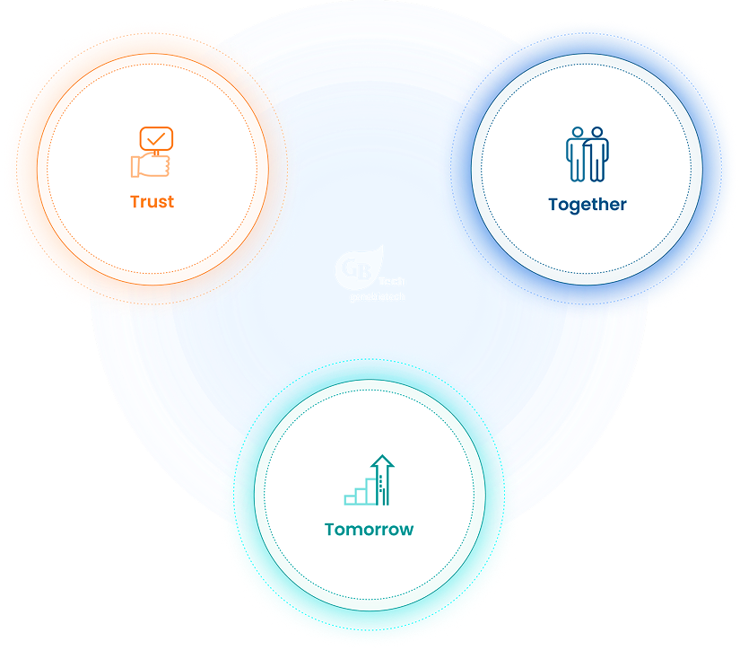
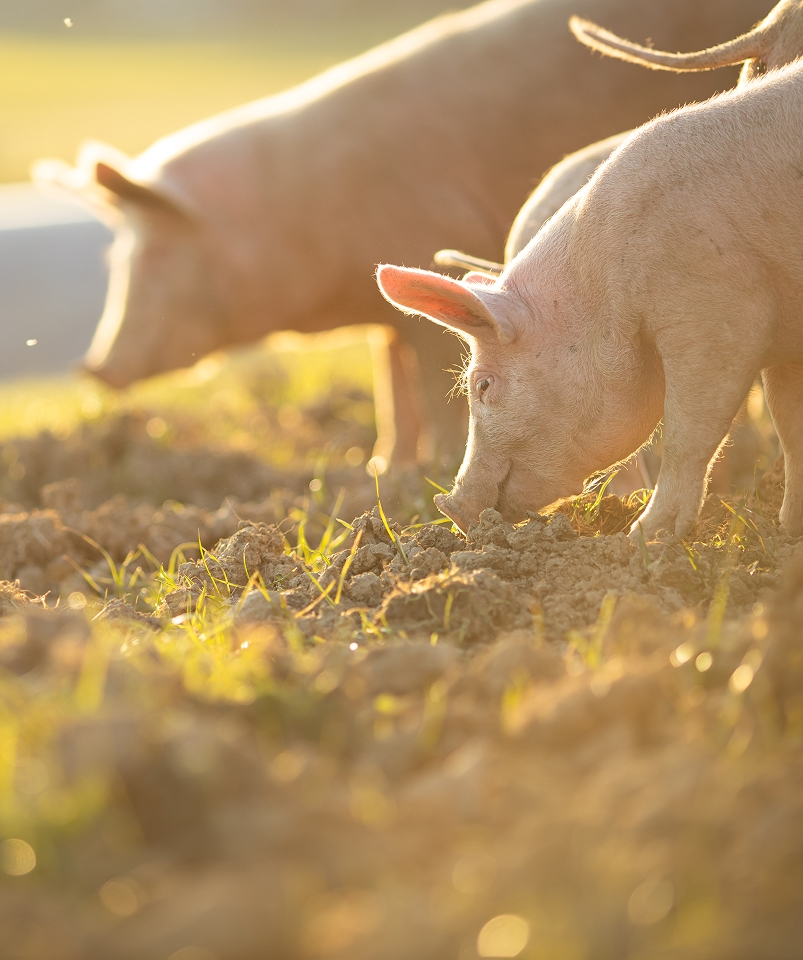
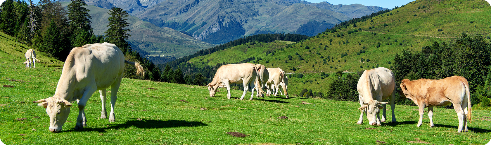

Our Vision
To lead the global transition toward sustainable and science-driven animal nutrition by redefining what’s possible through microbial and fermentation biotechnology—building a world where feed efficiency, animal health, and ecological responsibility coexist.
We envision a future where traditional wisdom and advanced science harmonize to improve animal well-being, food security, and environmental integrity across generations.

Our Mission
At Genebiotech, we are committed to developing high-performance, eco-friendly solutions that empower the livestock, aquaculture, and agriculture industries.
Through continuous innovation in solid-state fermentation and microbial engineering, we aim to:
① Create
Natural and functional feed ingredients that improve digestion, immunity, and nutrient uptake without reliance on synthetic additives or antibiotics.
② Share
Breakthrough technologies and know-how with partners worldwide, enhancing productivity and sustainability.
③ Sustain
Responsible innovation that aligns with global efforts to reduce environmental impact while improving food safety and quality.
④ Empower
Farmers, nutritionists, and veterinarians with tools that are both effective and accessible.


Similar to DaOne Chemical’s motto, Genebiotech’s core values are founded on the three “T” principles:
Trust, Together, and Tomorrow.
By blending science, tradition, and responsibility,
we advance our mission to support healthier animals, safer food, and a more sustainable world.